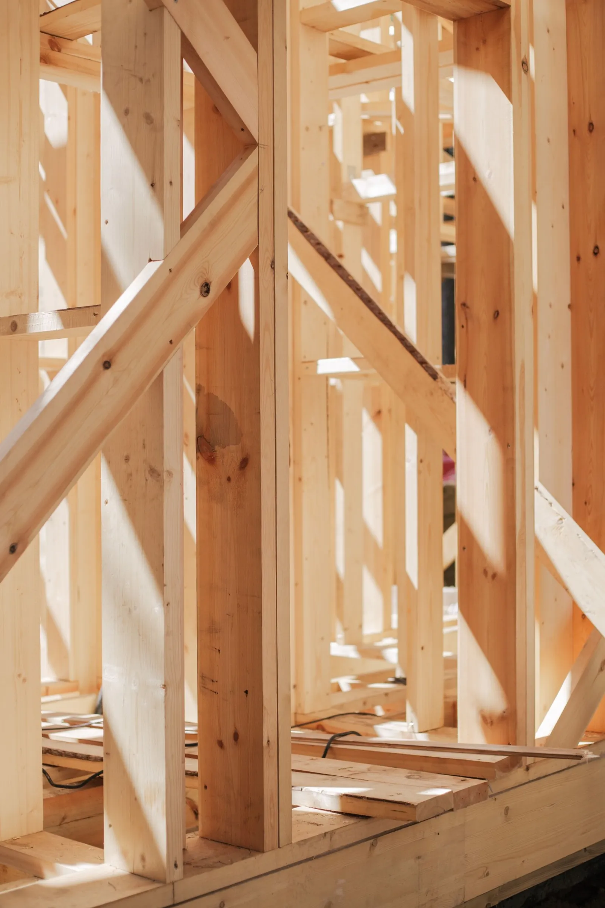

This hero photo starts duotone. As soon as the first ridgeline divider below
lights, the photo crossfades to full colour — a one-shot IntersectionObserver swap, not a
per-frame parallax listener. Scroll down.

Framing · Waiheke
01 · Landscape (stand-in)
Retaining, paths and planting
Stand-in copy for the section that would normally carry the landscaping pitch. Scroll further
for the second ridgeline handoff.
02 · How we work
Four steps, no surprises
The rail below fills as each step card crosses 40% into view — one IntersectionObserver per
card, no scroll listener, no rAF loop.
STEP 01
Site visit
Levels, photos, a walk through what is possible.
STEP 02
Written quote
Itemised, valid 30 days, 30% deposit confirms.
STEP 03
The build
Our team on site, progress photos as we go.
STEP 04
Handover
Final walk-through, balance invoiced, 12-month warranty.
03 · Stand-in card grid
Opacity-only reveal, no CLS
Each card below fades in (opacity only, no translateY) the first time it is 15%
visible, then unobserves itself. Compare with site/assets/motion.css .reveal,
which still animates a 16px rise — the CLS source flagged in
docs/performance-v3-2026-09-22.md.
Once approved, port this prototype into production as follows (no other behaviour changes):
site/assets/motion.css
- html.js .reveal { opacity:0; transform:translateY(var(--reveal-distance)); transition: opacity …, transform …; }
+ html.js .reveal { opacity:0; transition: opacity var(--motion-base) var(--ease-steady); transition-delay: calc(var(--stagger-step) * var(--i,0)); }
(drop --reveal-distance entirely; --reveal-distance token becomes dead and can be removed from :root)
- html.js .ridge img { transform: translateY(var(--parallax-y, 0px)); will-change: transform; }
+ html.js .ridge img { filter: grayscale(1) contrast(1.05); transition: filter var(--motion-slow) var(--ease-steady); }
+ html.js .ridge.photo-color img { filter: grayscale(0) contrast(1); }
(--parallax-max token becomes dead, remove)
site/assets/site.js
- "Hero photo parallax-lite" block (rAF tick loop + IO play/pause) — delete in full (~24 lines)
+ one-shot IO on the first .ridgeline that adds .photo-color to .ridge and disconnects
~ "Ridgeline motif" IO callback gains one line: `if (idx === 0) ridge.classList.add('photo-color')`
~ "Reveal + stagger" IO callback: drop the CLS-causing transform, keep opacity + stagger delay (no JS change, CSS-only)
~ "Recent work — filter with FLIP" gains an instant-mode branch already present for prefers-reduced-motion;
optionally exposes it as a persisted user preference if the Head wants the toggle in production (not required — the
toggle in this prototype is a review aid, reduced-motion already covers the real requirement)
site/index.html
~ keeps its /webp markup unchanged; no new markup needed for the crossfade
(class toggle only touches the existing )
Net JS: removes the parallax rAF+IO block (~24 lines / ~0.6 KB), adds ~6 lines to the ridgeline IO
callback (~0.15 KB) — net negative, matching §5 of 10-interaction-motion-v4.md.